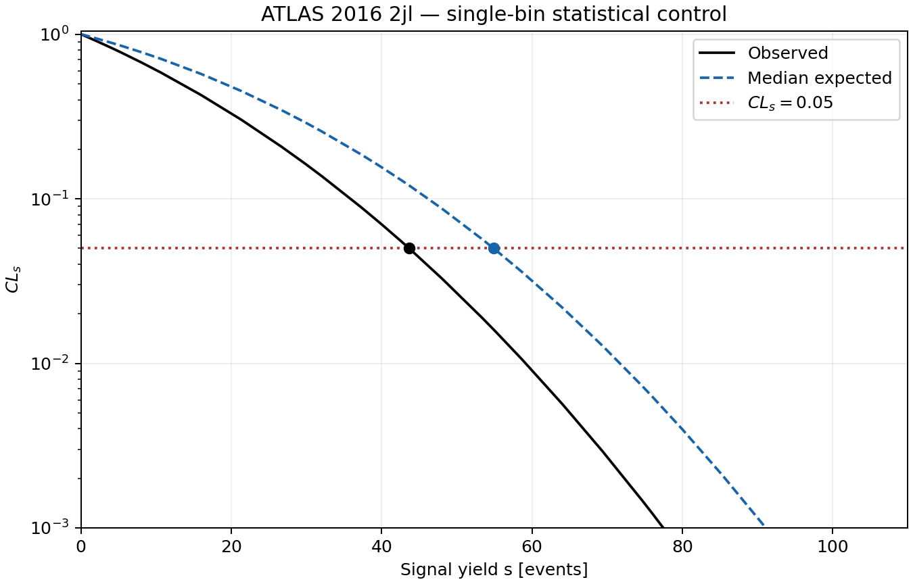
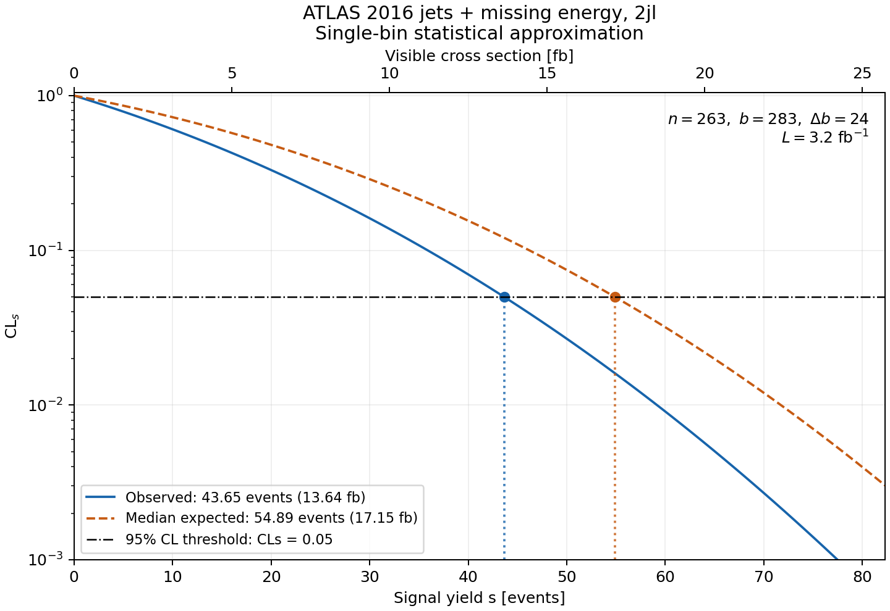
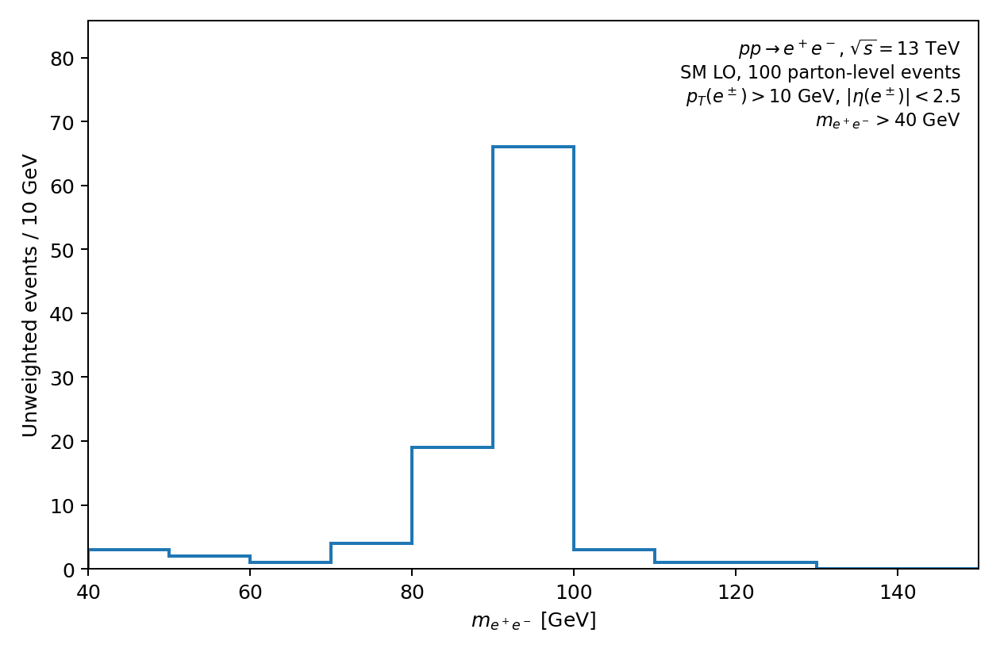
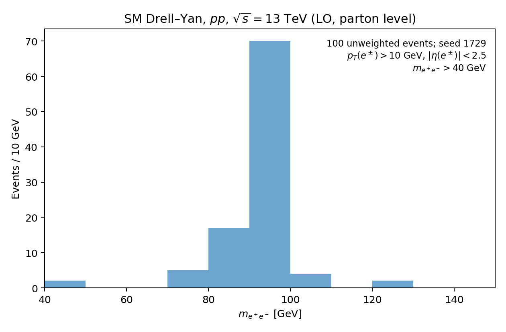

SEPTEMBER 8, 2026 ET / SEPTEMBER 9 UTC · EXPLORATORY PILOT
What the tools actually delivered
Six bounded subject/task runs, a shared Astra driver, and two simple controls. Ravel's clearest basic gap is supported workflow coverage. Its counting component works; completing a calculation and completing the requested framework workflow are separate outcomes.
RRR remains unresolved. This pilot does not reproduce the RRR contour, validate detector acceptance, establish statistical superiority or rank scientific accuracy. All experimental check-ins use scripted affirmative permission, with no substantive expert physics correction.
Evidence guide · Full assessment and next capability work · Machine-readable outcomes · Source availability
Assigned runs
MadAgents' retained-thread-cap and linker failures confound performance. Its separate operator-assisted control generated 100 events in 13.3 seconds using the same physics card after an environment repair. That receives no autonomous success credit. The first ephemeral-session launch was an evaluator-harness failure.
Original figures, with the claims they support
Both statistical components return 43.6513 observed and 54.8857 median-expected signal events. A fresh check of the serialized likelihoods verifies the roots and units. The plots below are the producers' original outputs; their different styling is retained.
Ravel · statistical component

The existing engine produces valid roots for the supplied approximation. The full workflow remains unmet. PDF · PNGColliderAgent · standalone statistical component

The agent writes a standalone pyhf calculation. This is not a shipped statistics-only framework route. PDF · PNGColliderAgent · documented native generation

100 events independently audited. σ = 605.07 ± 5.12 pb. sm-no_b_mass; dynamic scale choice 3. PDF · PNGHEPTAPOD · generation with integration workarounds

100 events independently audited. σ = 771.28 ± 6.22 pb. sm; fixed μR = μF = 91.188 GeV. PDF · PNGThe generation rates are not an accuracy contest. The two executed model restrictions and scale choices differ. Their 27.5% rate difference motivates an effective-physics-recipe comparison before rates or shapes receive fidelity scores. All printed errors here are generator integration errors, not theory uncertainties.
What follows from this
- Build supported generation-only and likelihood-only routes with gates appropriate to the requested stages.
- Bind comparisons to executed model, flavor, PDF, scale, cut, normalization and response settings, including resolved defaults.
- Use a published fiducial and then a reconstructed-object control to test analysis translation and response before returning to the difficult RRR migration problem.
22 numerical control checks · Affirmative proposal receipts · Executed generation recipes · Verification scope
Raw events, cards, full receipts, local checkouts and logs are preserved in the dated local comparative archive. This public bundle contains selected outputs and custody hashes, not competitor implementations. The runs use pinned revisions and fixed-order laptop conditions, not the authors' original evaluations.